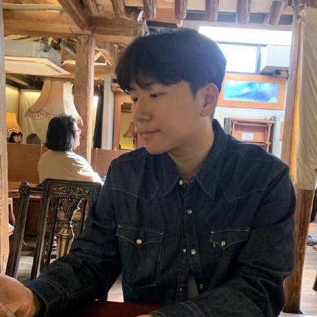
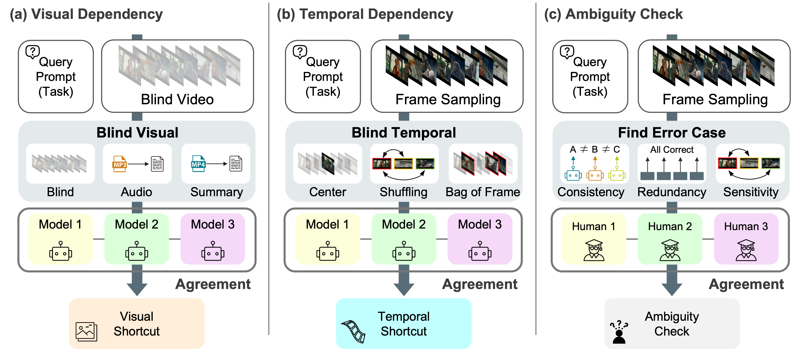
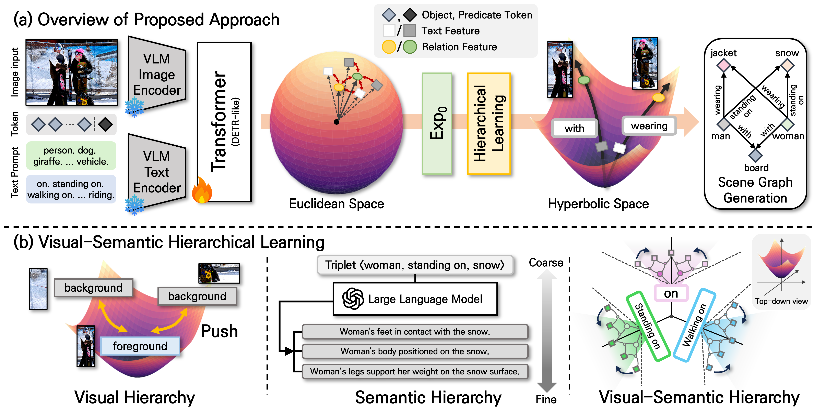
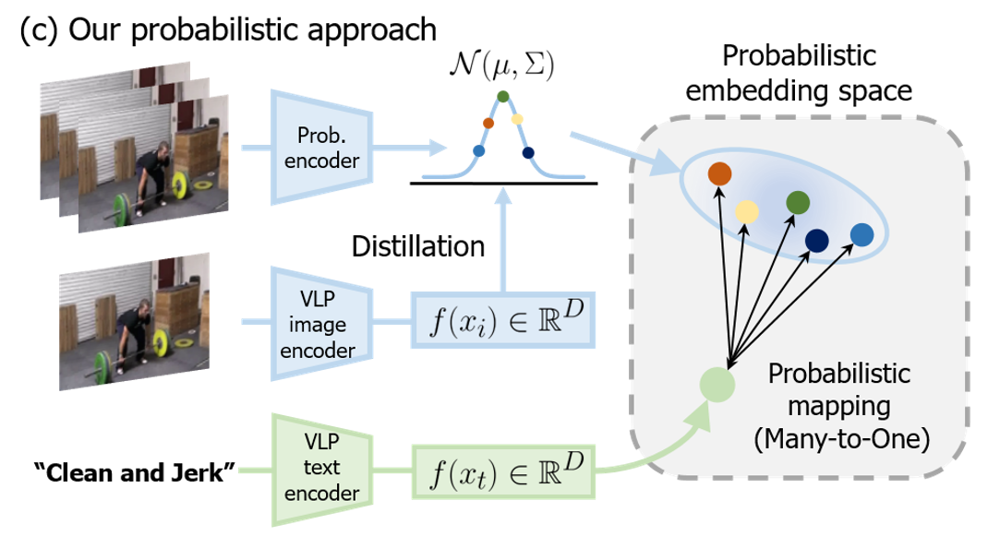
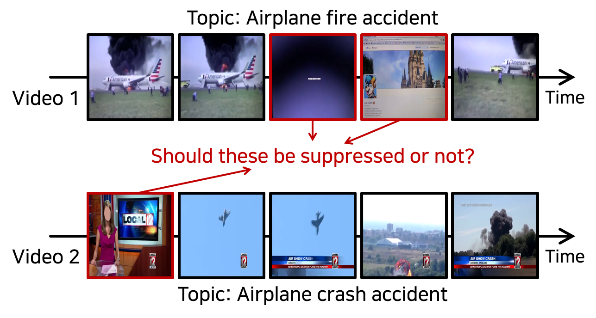
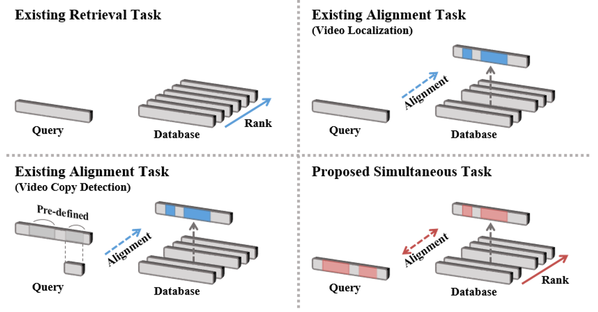
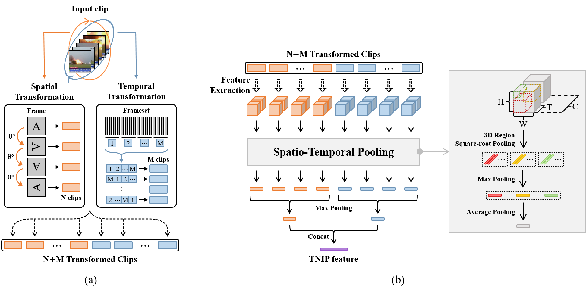

|
Geuntaek Lim I am a Ph.D. student in Artificial Intelligence at Sejong University, advised by Prof. Yukyung Choi. Recently, I was a research intern at NAVER Cloud. My research centers on multimodal AI with a particular emphasis on video-centric modeling. My goal is to empower AI systems to assist humans in interpreting complex video content. Email / CV / Google Scholar / LinkedIn / Github / |
 |
{kind=link}
🎙️ News |
|
🔬 Work Experience |

|
NAVER Cloud, Research Intern Seongnam, Korea (Oct 2025 - Apr 2026) Worked on Evaluation of Video-LLMs. (Host: Minho Shim) |

|
SNU MPR Lab., Research Intern Gwanak-gu, Korea (Mar 2025 - Sep 2025) Research Intern of Video Understanding (Host: Jonghyun Choi) |
📚 Publications* indicates equal contribution. Representative papers are highlighted. |
|
 |
Video-Oasis: Rethinking Evaluation of Video Understanding
Geuntaek Lim, Minho Shim, Sungjune Park, Jaeyun Lee, Inwoong Lee, Taeoh Kim, Dongyoon Wee, Yukyung Choi arXiv, 2026 paper / code |
|
 |
HypSGG: Open-Vocabulary Scene Graph Generation via Hyperbolic Representation and Hierarchical Supervision
Geuntaek Lim, Juyoung Hong, Uicheol Jung, Yukyung Choi arXiv, 2026 paper / code |
|
 |
Probabilistic Vision-Language Representation for Weakly Supervised Temporal Action Localization
Geuntaek Lim, Hyunwoo Kim, Joonsoo Kim, Yukyung Choi Proceedings of the 32nd ACM International Conference on Multimedia (ACM MM), 2024 paper / code |
|
 |
VVS: Video-to-Video Retrieval with Irrelevant Frame Suppression
Won Jo, Geuntaek Lim, Gwangjin Lee, Hyunwoo Kim, Byungsoo Ko, Yukyung Choi Proceedings of the AAAI Conference on Artificial Intelligence, 2024 paper / code |
|
 |
Simultaneous Video Retrieval and Alignment
Won Jo, Geuntaek Lim, Yujin Hwang, Gwangjin Lee, Joonsoo Kim, Joungil Yun, Jiyoung Jung, Yukyung Choi IEEE Access, 2023 paper |
|
 |
Exploring the Temporal Cues to Enhance Video Retrieval on Standardized CDVA
Won Jo, Geuntaek Lim, Joonsoo Kim, Joungil Yun, Yukyung Choi IEEE Access, 2022 paper / code |
|
Website's source code is referenced from Jon Barron's. |